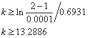

4.2.2.1. Örnek 1
 fonksiyonunun [1,2] aralığındaki kökünü
fonksiyonunun [1,2] aralığındaki kökünü  doğrulukla yarılama yöntemine göre hesaplayınız.
doğrulukla yarılama yöntemine göre hesaplayınız.
Çözüm:
Söz konusu fonksiyonun grafiğini şekil üzerinde görüyoruz. Buna göre f(x) in kökü 1.4 civarında olduğu anlaşılmaktadır.
Öncelikle bu yöntemi kullanarak hata sınırına göre kaç iterasyonla kökü elde edebileceğimizi bulmak istiyoruz. Bunun için (4.3) bağıntısı kullanılır.

Elde edilen bu değer bir üst tamsayıya yuvarlatılarak k=14 elde edilir. Şimdi ardı ardına 14 iterasyon uygulayarak köke ulaşabileceğimiz anlaşılıyor.